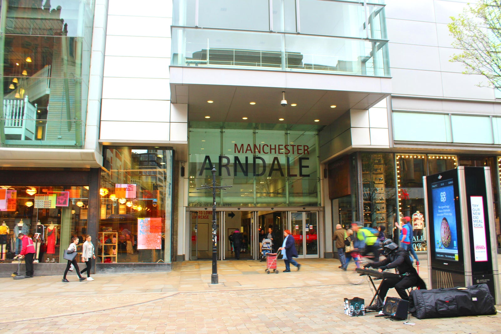
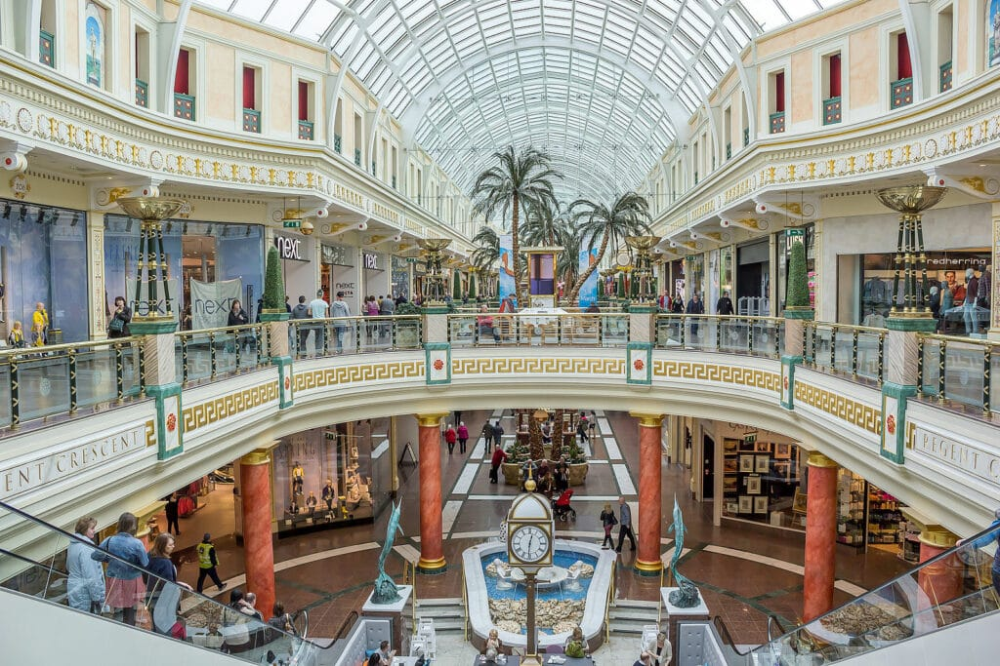

Shopping in and around Manchester
Located in the heart of Manchester, and within a 20 min walk from Campus, Arndale Shopping Centre is home to a large number of retailers. The Trafford Center, located in Old Trafford, is a must visit location in Manchester, home to various retailers, and restaurants.

